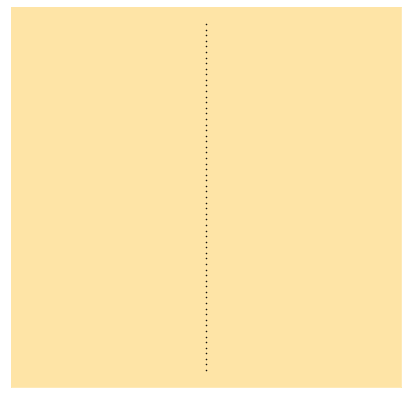
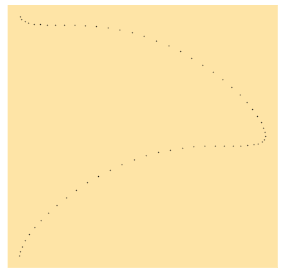
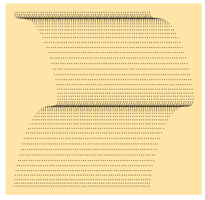
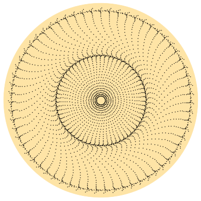
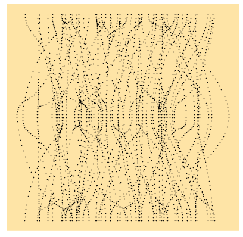
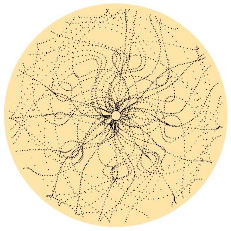

How to create art from math
- tags
We'll be using the numpy and matplotlib modules for this note. They provide the necessary mathematical and plotting tools required to start, for now.
import numpy as np import matplotlib.pyplot as plt # %matplotlib inline
First, some auxiliary functions to setup figures using matplotlib.
def create_fig(facecolor="#fee4a6", **kwargs): fig, ax = plt.subplots(figsize=(7,7), **kwargs) ax.set_facecolor(facecolor) for spine in ax.spines.keys(): ax.spines[spine].set_color(facecolor) ax.set_xticks([]) ax.set_yticks([]) return fig, ax
We want to see what happens when you provide mathematical transformations to seemingly simple set of points. To do so, let us start with a line.
x = np.pi y = np.arange(-np.pi, np.pi, 0.1) X, Y = np.meshgrid(x, y) fig, ax = create_fig() ax.scatter(X, Y, c='k', s=0.3) fig.savefig("./images/straight-line.png")

This is a simple vertical line on the cartesian plane. We will now see what happens when we apply a simple transformation using sine and cosine functions.
X_new = X + np.cos(Y) Y_new = Y + np.sin(Y)**2 fig, ax = create_fig() ax.scatter(X_new, Y_new, c='k', s=0.3) fig.savefig("./images/perturbed-line.png")

As we can see, a simple sinusoidal transformation is enough to give a straight line an interesting form. What if we do the same transformation on multiple such lines? We can do this by using a grid of points. We start out with a grid of points that we want to use to create something. I italicized something because I don't know what we will end up with.
x, y = np.arange(-np.pi, np.pi, 0.1), np.arange(-np.pi, np.pi, 0.1) X, Y = np.meshgrid(x, y) X_new = X + np.cos(Y) Y_new = Y + np.sin(Y)**2 fig, ax = create_fig() ax.scatter(X_new, Y_new, c='k', s=0.3) fig.savefig("./images/multiline-pattern.png")

Heyy! That looks almost like a curtain flap. Fairly interesting, if someone was to ask me. All this is well and good. It's simply plotting a function on the cartesian plane. We can also use a projection to the polar coordinate system to transform this pattern into a circular figure.
fig_p, ax_p = create_fig(facecolor="#fee4a6", **{"subplot_kw": {"projection": "polar"}}) ax_p.scatter(X_new, Y_new, c='k', s=0.3) fig_p.savefig("./images/multiline-pattern-polar.png")

Now, now, now! That's some pretty looking pattern right here. I'd say just this pattern by itself is pretty good but we should also add some noise to it, just to see the effect of randomness. The most simple way of doing this is to mutiply a random number to each of the computed value. We can do this easily using the np.random module of numpy.
We will first see the effect it has in the cartesian system.
x, y = np.arange(-np.pi, np.pi, 0.1), np.arange(-np.pi, np.pi, 0.1) X, Y = np.meshgrid(x, y) rng = np.random.default_rng(seed=1) X_new = X + rng.uniform(1, -1, Y.shape[0]) * np.cos(Y) Y_new = Y + rng.uniform(1, -1, Y.shape[0]) * np.sin(Y)**2 fig, ax = create_fig() ax.scatter(X_new, Y_new, c='k', s=0.3) fig.savefig("./images/multiline-random-cartesian.png")

Right, that looks almost like a nervous system or a cluster of wiring, depending on the viewers imagination - a la beauty lies in the eye of the beholder. I'm curious how this turns out in the polar coordinate system.
fig_p, ax_p = create_fig(facecolor="#fee4a6", **{"subplot_kw": {"projection": "polar"}}) ax_p.scatter(X_new, Y_new, c='k', s=0.3) fig_p.savefig("./images/multiline-random-polar.png")

Wow. If the original polar coordinate plot was a beauty of a pattern, this one is a beauty of chaos. I can see so many things in this plot, I'm not even sure if I can list them. If anyone saw the link in the beholder word above, this definitely looks like some version of that to me. Or an insane web. I might go mad just by looking at it for long, trying to visualise stuff.
Anyway, so this is the beginning of generating some curious generative art. Hopefully I'll get to animating these too. It would be fun to some day reach the level of aaronpenne - A collection of my generative artwork, mostly with Processing in Python mode and Generative Art – Katharina Brunner but for now, ciao!